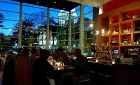

Battery-Powered Roller-Skates Oct. 2021 - Present
Lead Software Engineer
- Actively part of a team of Engineers dedicated to designing and constructing battery powered roller- skates with a speed-control remote. Designed, implemented, and tested necessary code implementations using Arduino (simplified C/C++).
Restaurant Rater Nov. 2021
Front-End Developer
- Collaborated with a team of three other members to design and implement a large data driven Restau- rant Rater project that uses a Red-Black-Tree to store, search for, or add data. Developed and inte- grated front-end processes for the project, such as the user interface.
